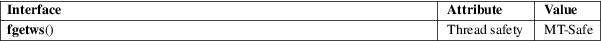

fgetws − read a wide-character string from a FILE stream
Standard C library (libc, −lc)
#include <wchar.h>
wchar_t *fgetws(wchar_t ws[restrict .n], int n, FILE *restrict stream);
The fgetws() function is the wide-character equivalent of the fgets(3) function. It reads a string of at most n−1 wide characters into the wide-character array pointed to by ws, and adds a terminating null wide character (L'\0'). It stops reading wide characters after it has encountered and stored a newline wide character. It also stops when end of stream is reached.
The programmer must ensure that there is room for at least n wide characters at ws.
For a nonlocking counterpart, see unlocked_stdio(3).
The fgetws() function, if successful, returns ws. If end of stream was already reached or if an error occurred, it returns NULL.
For an explanation of the terms used in this section, see attributes(7).

C11, POSIX.1-2008.
POSIX.1-2001, C99.
The behavior of fgetws() depends on the LC_CTYPE category of the current locale.
In the absence of additional information passed to the fopen(3) call, it is reasonable to expect that fgetws() will actually read a multibyte string from the stream and then convert it to a wide-character string.
This function is unreliable, because it does not permit to deal properly with null wide characters that may be present in the input.
fgetwc(3), unlocked_stdio(3)